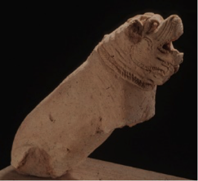

Introduction
Greek historian Herodotus wrote of a practice that mandated that all Mesopotamian women must engage in an act of prostitution once in their lives to pay homage to the gods (Bertnan 2003). For centuries individuals who studied ancient Mesopotamia would learn and marvel at such sacred prostitution. However, experts today say there is little evidence that supports Herodotus’ claims and some suggest that Herodotus’ reports may have been tainted by his own prejudices about Mesopotamia and the women who lived there (Budin 2008).
Herodotus’ fallacies are not irrelevant, however, because they do reveal two very important truths about studying the past, the first being that sometimes it is difficult (although it is very necessary) to think beyond our own habitus when studying other cultures. The second truth is that little is actually known about the lives of Mesopotamian women. Men usually served as the public agents of Mesopotamian society, operating in the spheres of business and travel, and, as a result, much of the remaining records that we use to understand Mesopotamian society today were written from a male perspective. Women operated in a separate and less-well-documented, domestic-centered sphere.
One of the best places to discover information about Mesopotamian women is in religious records. All members of society participated in Mesopotamian religion and in it women especially played a vital role as priestesses and their heavenly colleagues, goddesses. In being a priestess, a woman gained social status and, in many cases, an entrance to the domains of authority monopolized by men.
The goal of this presentation is to explore how religion provided a means of liberty for the women of Mesopotamia.
The Place of Women in Mesopotamian Society
Wives, mothers, daughters, and sisters, women were essential to the Mesopotamian way of life. They ran the homes, raised the families, cooked the food, created the textiles, and worshiped the gods. They served a distinct and separate function in society. This distinction unfortunately meant they did not have certain legal rights available to men. A woman was often defined by the status of the men of her life, her husband or father, and there were many laws and social norms that ensured women were in a socially weaker position than men (Stol 1995).
Mesopotamian men and women were governed by a strict set of gender norms: men belonged the worlds of travel and economy and women, for the most part, existed in the domestic sphere. Girls married young to much older men as a man needed ensure that he could properly support a family and girls were expected to produce more children in shorter lifetimes. Marriage was a contract between a groom-to-be and a father, where a girl and her dowry were promised after a certain time and exchange of bride price (Vivante 1999). Even in the eyes of the law women were treated quite differently from men. Although women were given some rights, such as the right to own property or to file charges against their husbands they received harsher punishments for crimes like adultery and had a more difficult time inheriting property (Vivante 1999).
Even with these limitations, women created their own spaces in society. There were female merchants, midwives, alewives, prostitutes, and musicians that enjoyed some of our Western idea of “extensive personal freedom.” Mesopotamian priestesses, however, were unrivaled in their ability to create a sphere of female privilege in their male-dominated society.
Priestesses
The Endehuanna disk. Features Endehuanna, daughter of King Sargon, before a Ziggurat. She is believed to be the first named poet and a priestess of the moon god Nanna herself (Hafford 2012)
Priestesses held a special place in Mesopotamian society. In some cases consecrated to the gods, they, along with those in the elite class, were the most revered women in Mesopotamia. As the go-between the world of men and that of the gods, priestesses were treated with reverence and used this respect to break through some of the social barriers that blocked other women.
A girl would become a priestess usually after being sent to a temple by her (usually wealthy) family, so that she may bring them good fortune and pray on their behalf (Vivant 1999). With her she would take a sizable dowry as if she were going into a normal marriage. However, there were also women that were kept as slaves of the temple. In both ways, a woman’s consent may have been unnecessary for her to become a priestess. During the Old Babylonian period, within a temple there existed a hierarchy of priestesses with an entum, or high priestess, and the naditu and ugbabtu priestesses under her. A priestess would live in the temple of her god and act as part of temple personnel, performing a variety of cultic, administrative and domestic duties (Bertnan 2003). The temple was viewed as an actual dwelling place of a god and therefore required all the upkeep of a normal household and clothing, food, and entertainment were also provided for the god in the temple.
Despite apparently functioning as “temple housewives”, being a priestess was not an unbearable job. Priestesses brought power into “women’s work,” cooking and cleaning for the rulers of the universe. Similarly, priestesses also enjoyed several other benefits of their station, including, to varying degrees, elevated social status, economic agency, and sexual liberation.
The priestesses of Mesopotamia were allowed to own and operate businesses and were noted for being sharp and savvy at their jobs (Vivant 1999). They could also buy and lease their own land. Quite a few gained a sizable fortune in their endeavors. Oftentimes a priestess would adopt a younger girl in her temple as a sort of protégée or younger sister and the money earned from her businesses was often left as an inheritance to the younger girl (a process almost unheard of outside of priestesshood) or sometimes given to a loyal slave who cared for the priestess in her old age. One can imagine that the process of adoption and inheritance created a tight-knit community between women within temples. Much of the information we have today concerning priestesses in Mesopotamia comes from a well-preserved stock of records at a place called Sippar, so, while we do have an accurate account of what being a priestess was like at this location, it is hard to say that all over Mesopotamia priestesses had the same experience.
Being a priestess also allowed for some freedom from conventions of marriage and sexuality placed on non-priestesses. Nadītu-priestesses were theoretically chaste but some could and did marry (Vivant 1999). Others were known to forgo marriage for sexual affairs (or perhaps have sexual affairs in marriage) (Vivant 1999). Those that married were permitted to adopt the children of their husband, if he had any from other marriages, and raise them as their own. These married priestesses, in addition to being linked to the divine, had active familial and social lives (Vivant 1999). The unmarried still enjoyed a sort of sexual libation less available to other women.
Goddesses
The Mesopotamian mother goddess, Nintud/Nintur or Belet-ili. She is the goddess responsible for aiding birth and pregnancy and often portrayed as a wet nurse surrounded by fetuses. It is difficult to pin down precise information about the mother goddess because many other goddesses are also occasionally referred to as ‘mother goddess.’ (Brisch 2013)
The religious system of ancient Mesopotamia was polytheistic, meaning not one but many deities were recognized and worshiped by the Mesopotamian people. The Mesopotamian pantheon consisted of both gods and goddesses who were thought to be responsible for all natural and supernatural forces in the cosmos. These entities, though immortal, and far more powerful than any human, had human characteristics assigned to them and were invested with human emotions, such as jealousy, sadness, and rage. Just as with mortals, male gods were believed to reign supreme in the cosmos and yet, just as with mortal women, goddesses were not without their own immense power. The following are not, by far, all of the Mesopotamian goddesses, but they are a good sampling of those who could hold their own against their male counterparts.
Inanna
Inana, who later also came to be identified with the goddess Ištar, was, undisputedly, the most prominent female figure in the Mesopotamian pantheon. She was a collection of contradictions and fascinating in her complexity (Heffron 2013). She was the goddess of love, fertility, and lust but also of warfare. Inanna was always portrayed as a young woman not yet burdened by motherhood or the woes of marriage; free from convention, she could be the purest virgin and the insatiable femme fatale, the young widow and the all-powerful goddess of war (Heffron 2013). Frequently eroticized in poetry and art, she is capable of stealing the hearts of men or leading them into battle. When she wasn’t shown as a sensual nude female, she portrayed as a great armor-clad warrior, often astride a lion. The poet Endehuanna wrote many verses praising Inanna, including the following which acclaims the might of Inanna the warlord.
“When humanity comes before you in awed silence at the terrifying radiance and tempest, you grasp the most terrible of all the divine powers”(“The First Poet” 2010).
Gula
Gula is the Mesopotamian goddess of healing and patroness of doctors. In addition to human beings, Gula was believed to also possess powers to care for vegetation and was referred to as she who "creates life in the land” (Heffron 2013).As the Mesopotamian “Lady of Health,” Gula was another influential goddess of multifaceted power. She is often associated with and portrayed in the company of her sacred mastiffs, dogs native to the area (Heffron 2013). Statues of dogs (like the one below) have been found with inscriptions or prayers to Gula asking for healing from ailments (Heffron 2013).

Mesopotamian Terracotta Dog with Kassite Cross
Gula was not, however, all puppies and benevolence. She was also known as the "queen whose 'tempest', like a raging storm, makes heaven tremble, makes earth quake." Allusions to the goddess and her loyal companions were also frequently mentioned in curses (Heffron 2013).
Ninlil
Ninlil was the Mesopotamian goddess of heaven, earth, and could also be considered queen of the underworld. Ninlil was the wife (and rape victim) of Enlil, god of the wind (Brisch 2013). In earlier periods Enlil was at the head of the Mesopotamian pantheon and Ninlil ruled by his side. She was sometimes considered a mother goddess and possessed powers of healing and showed compassion to less fortunate (Brisch 2013). It goes without saying that the right-hand-woman of heaven, earth, and the underworld was a powerful female figure in Mesopotamian religion.
In Conclusion
Mesopotamian women were not equal to their men in many ways. However, despite legal technicalities and social convention that prevented them from doing some of the things that men did, women were not powerless in the ancient world. Some did defy expectations and venture into the world of work otherwise reserved for men. Many found a different type of authority in their familial positions.
Religion created a third option for woman that allowed for new forms of freedom. Priestesses lived lives that earned them the respect of their communities, permitted for a certain freedom from traditional marriage and sexual restrictions and presented economic opportunities. Goddess-worship was another facet of Mesopotamian religion that presented women some power. To Mesopotamians, their goddesses were the mothers of the universe, benevolently watching and protecting human lives and, when need be, punishing them as well. It is this religion that we have to thank for what glimpse it does allow into the lives of Mesopotamian women.
Men may be written down as the pioneers of history but it was the hands of women that rocked the cradle of civilization. Though their accomplishments went largely unrecorded, the women of Mesopotamia are the founding mothers of ancient “herstory.”
References
Bertman, Stephen. "Priests and priestesses in ancient Mesopotamia." Handbook to Life in Ancient Mesopotamia. New York: Facts On File, Inc., 2003. Ancient and Medieval History Online. Facts On File.
Brisch, Nicole 'Ninlil (Mulliltu, Mullissu, Mylitta) (goddess)', Ancient Mesopotamian Gods and Goddesses, Oracc and the UK Higher Education Academy, 2013
Brisch, Nicole 'Mother Goddess (Ninmah, Nintud/r, Belet-ili)', Ancient Mesopotamian Gods and Goddesses, Oracc and the UK Higher Education Academy, 2013
Budin, Stephanie. The Myth of Sacred Prostitution in Antiquity. New York: Cambridge University Press, 2008
Enheduanna disk. Digital image. www.penn.museum.blog. University of Pennsylvania, June 2010. Web. Nov. 2015.
Heffron. Yaǧmur, 'Inana/Ištar (goddess)', Ancient Mesopotamian Gods and Goddesses, Oracc and the UK Higher Education Academy, 2013
Heffron. Yaǧmur, ' Gula/Ninkarrak (goddess)', Ancient Mesopotamian Gods and Goddesses, Oracc and the UK Higher Education Academy, 2013
Mark, Joshua J. “Mesopotamian Religion,” Ancient History Encyclopedia. Last modified February 22, 2011.
Mesopotamian Terracotta Dog with Kassite Cross. Digital image. www.cmaa-museum.org. California Museum of Ancient Art, 2008. Web. Nov. 2015.
Nintu-god. Digital image. The-many-names-of-god.com. Wordpress.com, n.d. Web. Nov. 2015.
Stol, M, (1995), Women in Mesopotamia, Journal of the Economic and Social History of the Orient, Vol. 38, No. 2, Women's History, pp. 123-144.
"The First Poet." Queen of Heaven. Wordpress.com, 05 Sept. 2010. Web. Nov. 2015.
Vivante, Bella. Women's Roles in Ancient Civilizations: A Reference Guide. Westport, CT: Greenwood, 1999. Print.